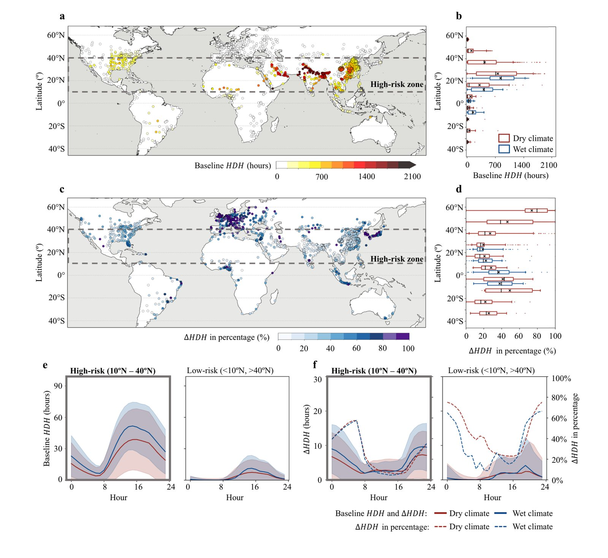
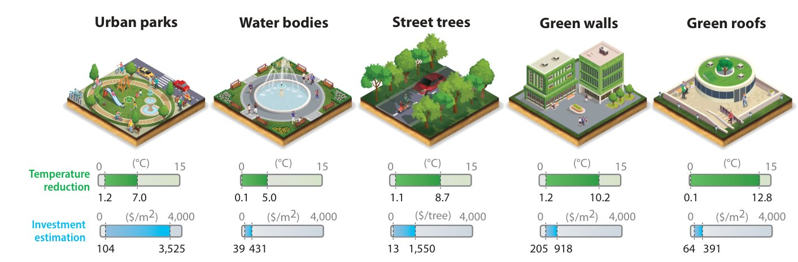
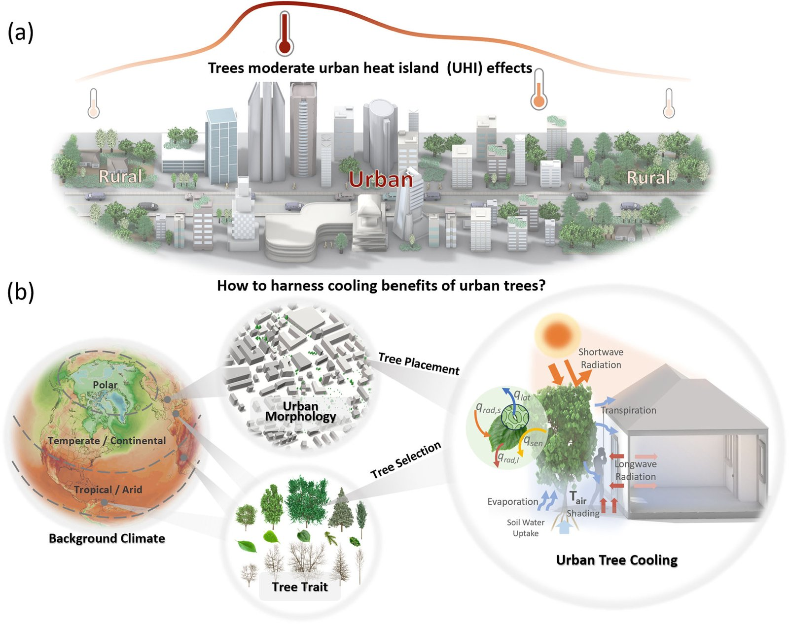
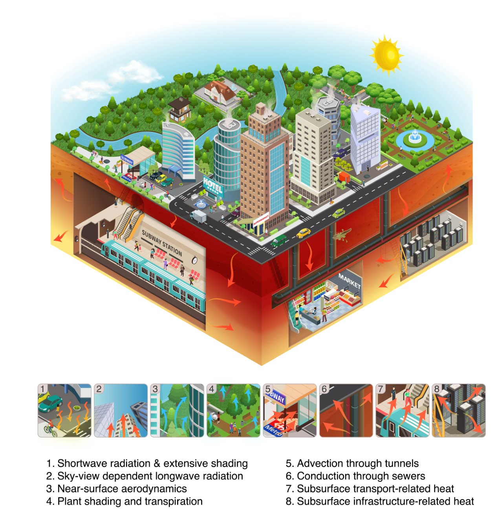
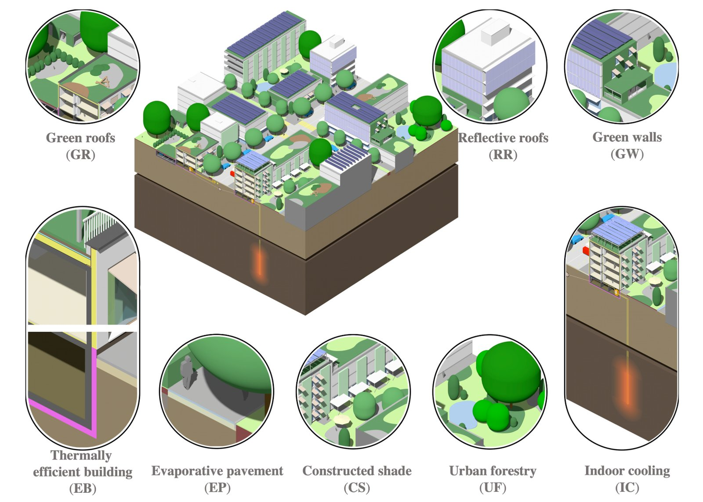
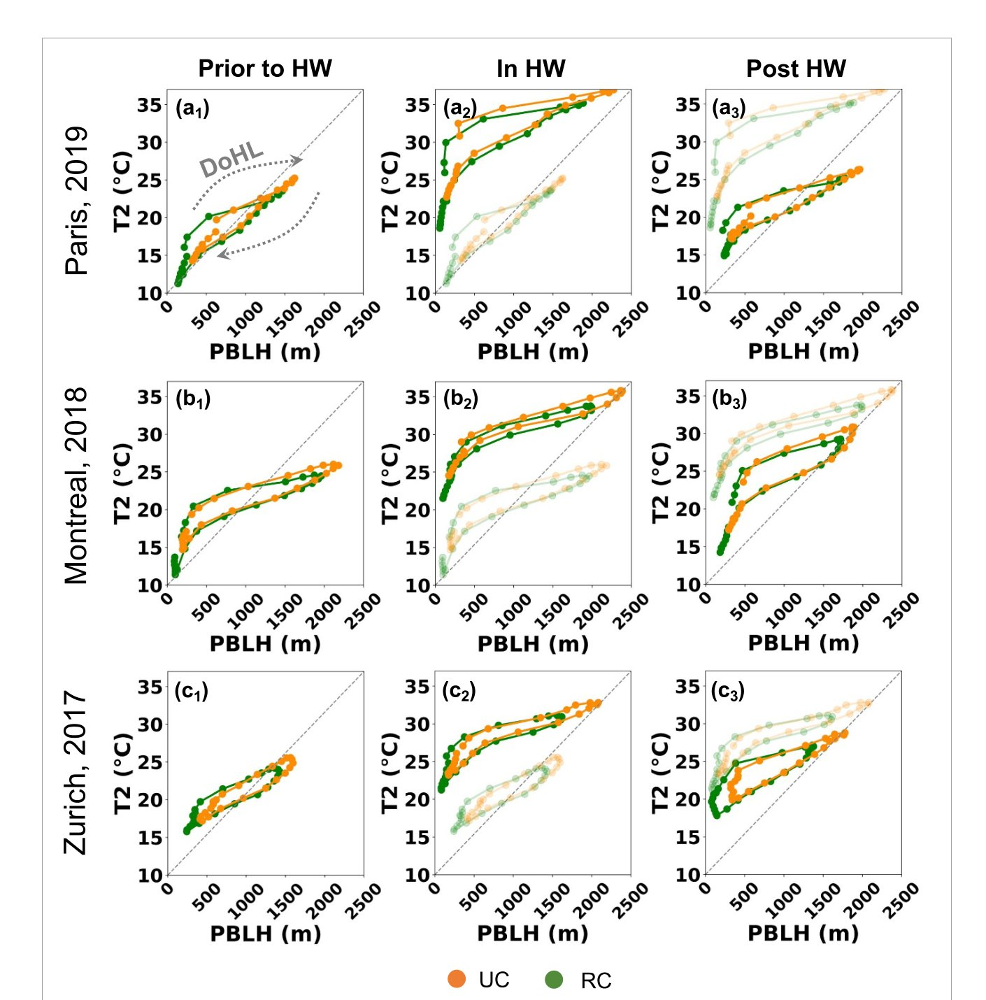
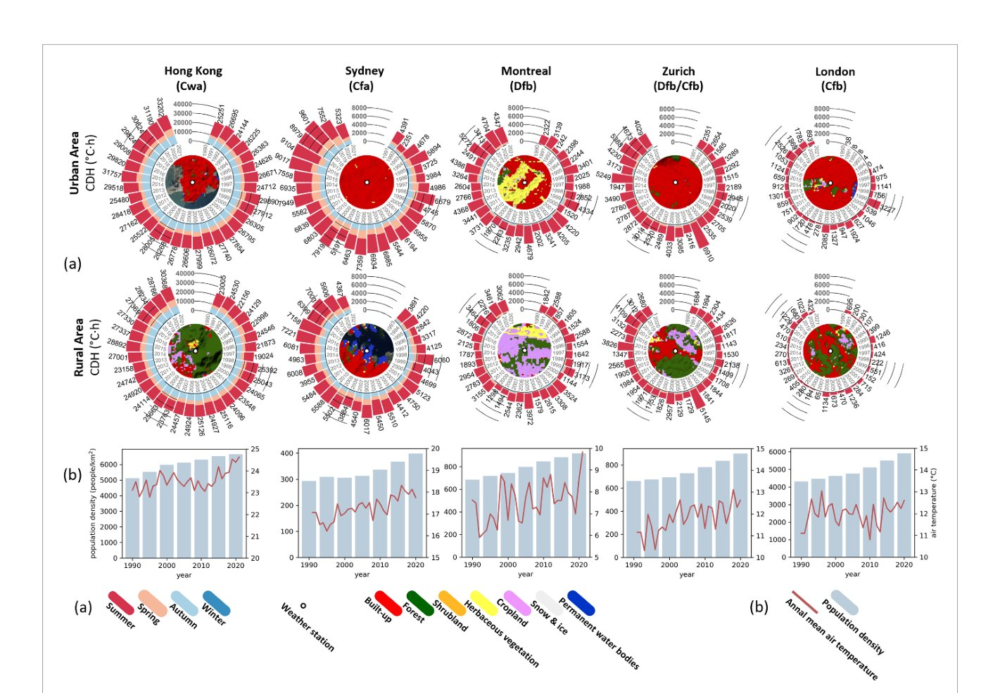
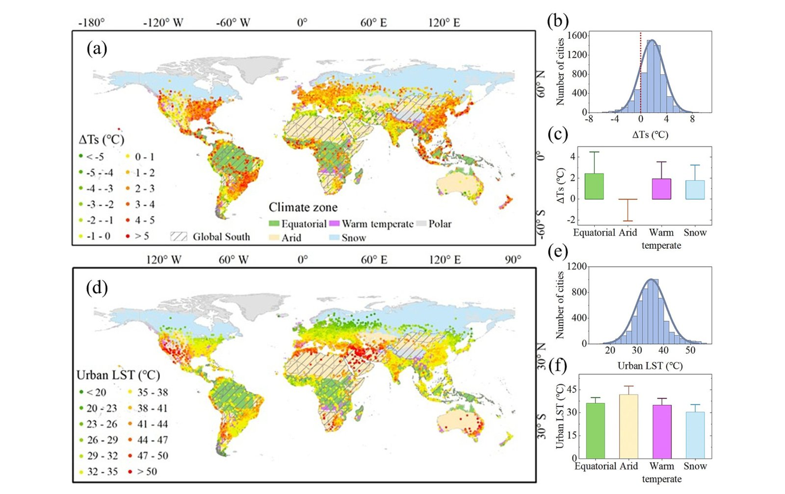
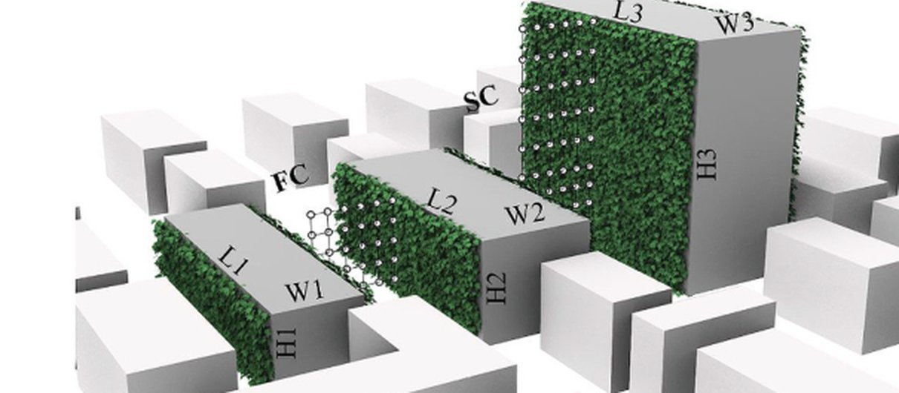

Figures that tell the story
Selected figures from my publications — each with the one thing it reveals. Click any figure to view it full size.

Urban cooling potential is deeply unequal: the cities that need it most have the least.
Ding X et al. · Nature Communications, 2026

From parks to green roofs, nature-based solutions can cool city air by up to 13 °C.
Zhao Y et al. · Annual Review of Environment and Resources, 2025

How much a tree cools its street depends on climate, city form, and the tree itself.
Li H et al. · Communications Earth & Environment, 2024

Urban heat doesn't stop at the street — it sinks into subways, sewers, and basements.
Rotta Loria AF et al. · Philosophical Transactions of the Royal Society A, 2025

There is no single cure for urban heat — cities cool fastest when measures work as a team.
Zhao Y et al. · Renewable and Sustainable Energy Reviews, 2023

A heatwave makes the atmosphere above a city breathe harder — rising higher by day, sinking lower by night.
Zhao Y et al. · Environmental Research Letters, 2024

Thirty years of air-conditioning bills tell one story: hotter cities need ever more cooling.
Li H et al. · Environmental Research Letters, 2023

The world's fastest-warming cities are overwhelmingly in the Global South — four for every one in the North.
Jiang S et al. · Remote Sensing of Environment, 2026

Dressing buildings in green cools the street below — a model city in the wind tunnel shows how.
Li H et al. · Building and Environment, 2022